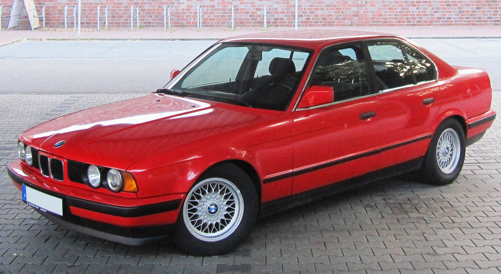

YOUR GARAGE / 01
BMW 520i
E34 · BERLINA · 1991
M50B20 2.0 L 150 CV
OVERVIEW / 02
Estado del vehículo
QUICK ACCESS / 03
Tu libro de servicio
Proyecto personal independiente. No afiliado a BMW AG. Verifica siempre los datos técnicos con documentación de taller correspondiente a tu versión.
SERVICE RECORD / 04
Libro de servicio
Registra cada trabajo realizado en tu E34.
HISTORY / 05
Historial
Todavía no hay intervenciones registradas.
MAINTENANCE PLANNER / 06
Recordatorios
Programa operaciones por fecha o kilometraje.
Plan base E34
Genera recordatorios orientativos por kilometraje y tiempo. Se calculan desde el odómetro y la fecha actuales.
UPCOMING / 07
Próximas operaciones
Los avisos vencen cuando se alcanza el kilometraje o la fecha, lo que ocurra primero. El plan base se inspira en el calendario de mantenimiento Haynes para E30/E28/E34; es una pauta conservadora, no una tabla oficial específica de BMW para tu M50.
No tienes recordatorios pendientes.
WORKSHOP DATA / 08
Manual técnico
Biblioteca inicial del BMW E34. Los datos se ampliarán y contrastarán por variante.
FuenteBiblioteca transcrita del catálogo BMW Tightening Torques (20/10/1997). Cada ficha conserva página, variante y notas. Comprueba siempre código de caja, versión y procedimiento antes de aplicar un par.
Ficha del vehículo＋
ModeloBMW 520i E34
Año1991
MotorM50B20 · sin VANOS
Cilindrada1.991 cm³
Potencia110 kW / 150 CV
DistribuciónCadena
Fluidos y capacidades＋
Vehículo base520i E34 berlina · 1991 · M50B20 sin VANOS. Esta ficha no presupone caja, diferencial ni equipamiento hidráulico.
Motor · M50B20
- Lubricante y capacidad
- Pendiente de contrastar
- Especificación / viscosidad
- Pendiente de contrastar
- Referencia OEM
- Pendiente de validar por VIN
Caja de cambios
- Identificación
- Código de caja no disponible
- Lubricante y capacidad
- Dependen de la caja instalada
- Referencia OEM
- Pendiente de validar por VIN y código
Diferencial
- Identificación
- Relación y tipo de autoblocante por confirmar
- Lubricante y capacidad
- Dependen del diferencial instalado
- Referencia OEM
- Pendiente de validar por VIN y marcado
Dirección asistida
- Identificación
- Confirmar equipo y etiqueta del depósito
- Fluido y cantidad
- No determinados para esta unidad
- Referencia OEM
- Pendiente de validar por VIN
Refrigeración · M50
- Refrigerante y capacidad
- Pendiente de contrastar
- Concentración / especificación
- Pendiente de contrastar
- Referencias OEM
- Pendientes de validar por VIN
No se muestran valores estimados: los manuales enlazados son referencias generales y sus valores aún no se han contrastado con la configuración europea exacta de esta unidad. Para completarlos hacen falta el VIN, el código/etiqueta de la caja, el marcado del diferencial y la etiqueta del depósito de dirección, además de documentación BMW aplicable. La capacidad de servicio puede diferir de la capacidad total del sistema.
Consultar Haynes E30/E28/E34 · referencia secundaria ↗ Consultar Bentley BMW 5-Series · confirmar mercado y variante ↗Pares de apriete · BMW 1997—
Los registros M50/E34 aparecen identificados. «General / All» reproduce la clasificación de la tabla original; no sustituye la comprobación de la variante concreta. Los pares con ángulo, tolerancia, lubricación o fijador conservan esas condiciones.
La interfaz puede cambiar a inglés; las descripciones de la biblioteca de pares permanecen en español.
Abrir catálogo BMW original completo · PDF · 136 páginas ↗Referencias OEM＋
Añadiremos referencias por grupo ETK, con notas de compatibilidad y sustituciones.
Procedimientos de taller＋
Procedimientos paso a paso, herramientas necesarias y advertencias.
GARAGE SETTINGS / 09
Ficha del vehículo
Datos locales guardados en este dispositivo.
Foto del vehículo
La foto genérica sirve de referencia; tu foto propia se guarda solo en este dispositivo.
Foto de referencia: BMW 520i de 1992, de Felix Schmidt (Wikimedia Commons), CC BY-SA 3.0; original sin modificar. CC BY-SA 3.0
Tus datos
Los registros se guardan localmente en el navegador. Esta versión no sincroniza todavía entre dispositivos.
Idioma de la interfaz
El idioma afecta a la interfaz; los textos de tus registros se mantienen tal como los escribiste. Las unidades siguen en km.